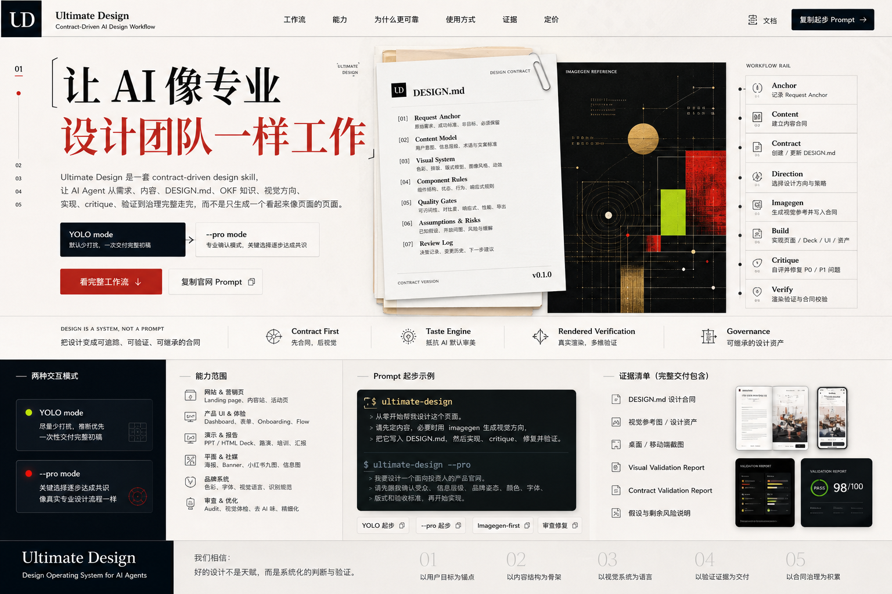

UDDESIGN.md
[01]需求锚点
原始诉求、最新调整、验收标准[02]内容合同
先讲什么、后讲什么、哪些词不能乱[03]设计方向
色彩、字体、版式、密度和视觉记忆点[04]质量门
响应式、可访问性、截图验证、交付格式[05]复盘记录
改了什么、为什么改、还剩什么风险
让 AI 设计有流程、有判断、有交付证据。
它不是模板包，也不是一句“高级一点”。它把设计需求落到 DESIGN.md 里：先想清楚要讲什么，再定方向，做出页面或 PPT，自己挑毛病，修完，再用真实截图验证。
[01]需求锚点[02]内容合同[03]设计方向[04]质量门[05]复盘记录
Why it exists
很多页面看上去完整，其实没有回答需求；看上去热闹，其实信息层级乱了。Ultimate Design 先管住问题，再开始做视觉。
DESIGN.md 不是形式，它是设计判断的账本。
所以它要求先 critique，再 repair，最后才交付。
What it is
Ultimate Design 把设计拆成四件事：把需求说清楚，把知识按需调出来，把品味落成规则，把成品拿去验证。
记录用户诉求、内容模型、视觉系统、组件规则、假设和风险。
网页、产品、PPT、平面、品牌和内容策略，按任务分支读取。
用 taste dials、反默认锁和版式家族检查，避免 AI 套路感。
用真实截图、语义区检查和二次自评，把低级问题拦在交付前。
把原始需求、最新调整、目标受众、成功标准和非目标写下来，防止越做越偏。
先回答用户为什么来、第一屏要懂什么、行动意味着什么，再谈版式。
没有 DESIGN.md 也没关系，agent 会根据上下文建立第一版合同。
确定品牌姿态、色彩承诺、字体性格、信息密度、图像策略和版式模型。
参考图是可选输入。有图就吸收结构、气质和反参考；没图就继续，不默认生成。
做出页面、PPT、图形资产、产品 UI 或品牌系统，而不是只写一段说明。
交付前先自查：有没有跑题、翻译腔、卡片套路、错位、拥挤和奇怪换行。
保存截图，跑验证，更新合同，让下一位 agent 能接着做。
Capabilities
不同媒介会读取不同分支知识，但共同点不变：先定义内容和判断，再做视觉和实现，最后验证。
从调研、想法或产品说明，做成能讲清楚价值的页面。
Dashboard、表单、onboarding、pricing、流程和原型。
路演、汇报、培训、产品讲解和 HTML deck。
海报、banner、小红书九图、报告封面和信息图。
色彩、字体、识别锚点、视觉语言和跨媒介规则。
检查已有设计，找出问题，修完再验证。
How to prompt
默认少问，先做完整初稿。你要更专业的对齐过程，就加 --pro。你有参考图就发，没有也不影响它继续设计。
$ultimate-design 从零开始帮我设计这个页面。请先定内容和 DESIGN.md；如果我提供参考图，就作为可选输入吸收；没有参考图也继续选择方向。然后实现、critique、修复并验证。
$ultimate-design --pro 我要设计一个面向投资人的产品官网。请先跟我确认受众、信息层级、品牌姿态、颜色、字体、版式、参考图和验收标准，再开始实现。
$ultimate-design 我会提供一张参考图。请只提取它的结构、氛围、色彩和节奏，不要照抄文字或坏排版；如果我没发图，就按内容和上下文继续设计。
Evidence
Ultimate Design 的成品不只是一段 HTML。它会留下合同、截图、验证结果、假设和剩余风险，让设计能被审查，也能被继续。